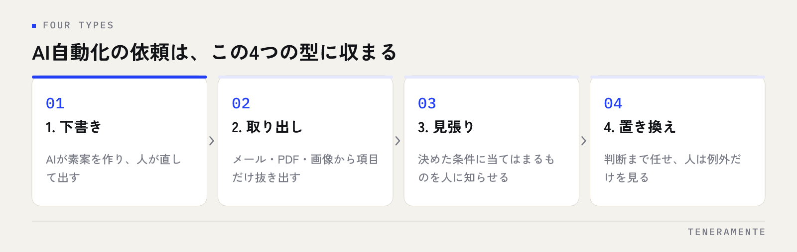

AIで業務を自動化したいと思っても、何をどこまで頼めばよいのかは見えにくいものです。結論から申し上げると、依頼の前に決めるのは使うツールではなく、どの作業のどこからどこまでを機械に渡すかという範囲です。範囲が1文で言えれば、費用の見積もりも、小さく試す形も、そこから決められます。この記事では自動化の依頼を4つの型に分け、最初に試す範囲の選び方と費用の考え方を順に整理します。
📌 この記事の結論
AI業務自動化の費用は、作る費用だけでは決まりません。作る費用・使い続ける費用・直す費用の3つに分けて見ると比較できる形になります。そしてこの3つを出してもらうには、対象の作業を1つに絞り、入口と出口を言葉にしておく必要があります。範囲が決まっていない依頼には、どの相談先も概算しか出せません。
01AIで業務を自動化する依頼は、範囲が決まらないと見積もりが出ない
「AIで業務を自動化したい」という相談は増えていますが、この一文のままでは見積もりが出ません。自動化という言葉が指す範囲が、話す人によってまったく違うからです。
たとえば同じ「問い合わせ対応を自動化したい」でも、中身は分かれます。届いたメールから顧客名と要件を取り出して台帳に入れるところまでなのか、返信の下書きまで作るのか、簡単な質問には人を介さず返してしまうのか。この3つは作るものも、費用も、気をつける点も違います。
作る側も推測で金額を出せば、後で食い違います。だから最初にやるのは、ツールを選ぶことではありません。対象の作業を1つに絞り、その入口と出口を言葉にすることが出発点です。進め方の全体像はAI業務改善の進め方にまとめています。
02自動化の依頼は、4つの型に分けると決まる
実際の相談を分解すると、頼みたいことはだいたい次の4つの型のどれかに収まります。型が決まると、頼み方も費用の目安も自然に絞られます。

一つ目は下書きの型です。文章やメール、報告書の素案をAIに作らせ、人が直して出します。議事録や日報、定型の返信文がここに当たります。人が必ず最後に見るので、間違いが外に出にくく、最初に試す範囲としては扱いやすい型です。
二つ目は取り出しの型です。メール・PDF・画像の中から、必要な項目だけを抜き出して表やシステムに入れます。注文書、申込書、名刺、請求書の処理がここです。転記という作業そのものが消えるので、効果が数えやすくなります。
三つ目は見張りの型です。決めた条件に当てはまるものを拾い、人に知らせます。期限が近い案件、返信が止まっている問い合わせ、在庫が減った商品などです。人が毎日目で探している作業を置き換えます。
四つ目は置き換えの型です。判断まで含めて機械に任せ、人は例外だけを見ます。効果は大きい反面、間違ったときの影響も大きいので、前の3つを通ったあとに検討する型です。
03最初に小さく試す範囲は、こう選ぶ
最初から全体に手を入れると、効果が出ているのかどうかが分かりません。小さく始めるときの順番は決まっています。
まず、対象の作業を1つ選びます。選ぶ基準は「毎日発生する」「人が手で写している」「やり方が人によって変わらない」の3つです。この3つがそろう作業は、置き換えたときの変化が現場にすぐ伝わります。逆に、月に1回しか起きない作業や、担当者ごとにやり方が違う作業は後回しにしてください。
次に、入口と出口を決めます。入口はどこから情報が入るか、出口はどこに結果が残るかです。「受信箱に届いたメールが入口、表計算ソフトの1行が出口」まで決まれば、作る側は設計に入れます。
三つ目に、試す期間と続ける条件を先に決めます。期間を決めずに試すと、なんとなく使われないまま終わります。「2週間使って、転記の手間が減ったと担当者が言えば続ける」のように、やめる判断もできる形にしてください。小さく試す段階の費用感はAI業務改善とアプリ開発の関係も参考になります。
04費用は「作る」「使い続ける」「直す」の3つに分かれる
費用の比較でつまずく原因は、総額だけを見ることです。中身は3つに分かれます。
| 費用の種類 | 何に対してかかるか | 見積もりで確かめること |
|---|---|---|
| 作る費用 | 業務の聞き取り、設計、実装、公開までの作業 | どこまでが含まれるか。聞き取りや公開作業は別見積もりか |
| 使い続ける費用 | サーバー、AIの利用料、保守、見守り | AIの利用料は誰が払う形か。件数が増えたらどう変わるか |
| 直す費用 | 公開後の修正、項目の追加、業務変更への対応 | 月額に含まれる修正の範囲。それを超えた場合の出し方 |
とくに見落としやすいのは、使い続ける費用のうちAIの利用料です。AIは処理した量に応じて料金が発生する仕組みが一般的なので、扱う件数が増えると費用も増えます。誰の契約で、どちらが負担するのかを最初に確かめてください。
直す費用も重要です。業務は変わります。項目を1つ足すたびに依頼と見積もりが必要な形だと、小さな変化で止まります。月額にどこまでの修正が含まれるのか、含まれない作業はどう見積もるのかを、依頼の前に聞いて構いません。
05見積もりを依頼するときに揃えておく材料
材料がそろっていれば、同じ前提で複数の相談先を比べられます。次の項目を用意してください。
- 対象の作業を1つ挙げ、その作業が1日または1か月に何件発生するか言える
- その作業を実際にやっている人の名前が挙がっている
- 入口と出口を、1文で書いてある（どこから入り、どこに残るか）
- 今の手順を、紙・メール・表計算ソフトの単位で説明できる
- 例外の扱いを3つ以上挙げられる（急ぎのとき、書式が違う相手、やり直しが出たとき）
- 機械に任せる範囲と、人が必ず見る範囲を分けてある
- 入力してよい情報と、入れてはいけない情報の線引きを社内で決めてある
- 最初に試したい期間と、続ける条件を決めてある
すべてそろわなくても相談はできます。埋まっていない項目があるなら、それを打ち合わせの議題として先に出してください。相談先の選び方はAI導入の相談先に整理しています。
先に決めておくと早いこと
社内の情報をAIに入れてよいかどうかの線引きは、技術ではなく社内の取り決めです。顧客の氏名、取引金額、契約書の中身。どこまで入れてよいかが決まっていないと、設計の途中で止まります。入れてよい範囲が狭いなら、その前提で選べる方法を相談先に聞いてください。詳しくはAI導入でつまずく原因にも書いています。
06小さく試したあと、広げるかどうかの判断
試したあとに広げるかどうかは、感触ではなく決めた条件で判断します。見るのは3つです。
一つ目は、手間が本当に減ったかどうかです。前と同じ作業が残ったうえにAIの確認作業が増えていれば、合計の手間は増えています。「今まで打ち直していた項目を打たなくなった」のように、消えた作業を名前で言えるかどうかで判断してください。
二つ目は、入力する人が使い続けているかどうかです。使われていない理由は、ほぼ手間の増加です。確認の画面が多い、元の画面と行き来する、結果が信用できず結局やり直している。どれなのかを担当者に聞くと、直す場所が分かります。
三つ目は、間違いが起きたときに気づける形になっているかどうかです。AIは間違います。誰がどこで気づくのかが決まっていない範囲は、まだ広げる段階ではありません。
この3つが通っていれば、次は同じ型の別の作業へ広げるのが順当です。型が同じなら、作り方の多くを使い回せます。
07よくある失敗と、その避け方
ツールの名前から相談を始める。どのAIを使うかは、業務が決まってから選ぶものです。先に業務の範囲を決めてください。ツールの違い自体は主要AIの違いに整理しています。
全社で一斉に始める。一斉に始めると、効かなかった原因が分からなくなります。1部署・1業務から始めて、効果が見えた形を横に広げてください。
AIの出力をそのまま外に出す。間違いが顧客に届くと、取り戻す手間が自動化の効果を上回ります。最初は人が必ず最後に見る型を選んでください。
人が確認する作業を数えていない。確認に時間がかかるなら、合計の手間は減りません。確認の手順も含めて、前と後を比べてください。
例外を後回しにする。例外は必ず出ます。最初に挙げておけば、機械に任せるか人が残すかを選べますが、後から出ると作り直しになります。
総額だけで見積もりを比べる。含まれる範囲が違えば総額は比べられません。作る費用・使い続ける費用・直す費用の3つに分けて出してもらってください。
08自分で進める場合と、専門家に任せる場合の分かれ目
一般論として、判断の基準は3つです。
一つ目は、業務を言葉にする作業を社内でやれるかどうかです。毎日の手順と例外を知っているのは現場の人だけなので、ここは完全に外へ出せません。聞き取りを手伝ってもらうことはできますが、中身を代わりに作ることはできません。この整理に手が回らない状態なら、整理の段階から一緒に進める相手を探すほうが結果が早く出ます。
二つ目は、業務の中心に入るかどうかです。社内の下書き作りのように、間違っても人が直せば済む範囲なら、既製のAIサービスを契約して自分たちで試すところから始められます。一方で、顧客に届く内容や、金額に関わる処理が含まれるなら、間違いが出たときの備えまで設計する必要があります。ここは経験のある相手と進めるのが自然です。
三つ目は、続けて直せるかどうかです。作るところまでは外に出してよいのですが、公開後に項目や条件を変えられない形だと、業務が変わるたびに止まります。社内で触れる範囲をどこまでにするかを、依頼の段階で決めてください。自分たちで触りたいなら、その前提で相談する必要があります。
迷うときは、対象の作業を1つに絞って相談するところから始めてください。範囲が小さいほど、自社でやれることとやれないことが具体的な作業として見えてきます。
09よくある質問
何から自動化すればよいか決まっていない段階でも相談できますか？
既製のAIサービスを契約するのと、作ってもらうのはどちらがよいですか？
社内の情報をAIに入れるのが不安です。
どれくらいの期間で形になりますか？
試してみて合わなかった場合、途中でやめられますか？
10まとめ：範囲が1文で言えれば、費用も進め方も決まる
AIで業務を自動化するときの頼み方は、順番で決まります。対象の作業を1つに絞り、下書き・取り出し・見張り・置き換えのどの型かを決め、入口と出口を1文にする。そのうえで、作る費用・使い続ける費用・直す費用の3つに分けて見積もりを出してもらい、試す期間と続ける条件を先に決めておく。ここまでそろえば、どの相談先と進めても大きく外れません。
逆に、ツールの名前から相談を始め、全社で一斉に動き、人の確認作業を数えないまま進めると、費用はかかったのに手間が減らない結果になります。自動化は範囲の設計が本体です。
TENERAMENTEなら、この記事で挙げた「対象の作業を1つに絞る」段階から打ち合わせに入り、入口と出口の言葉にする作業、入力してよい情報の線引き、人が必ず見る範囲の設計までを一緒に形にしてから、小さく触れる形で試す進め方をとります。公開後に条件や項目を自社で変えられる形で引き渡すので、業務が変わるたびに依頼と見積もりを待たずに済みます。社内AI導入の設計・研修・業務自動化の進め方はAI活用支援にまとめており、初回のご相談60分は無料です。何から始めるか決まっていない段階でも、お問い合わせからお気軽にご相談ください。